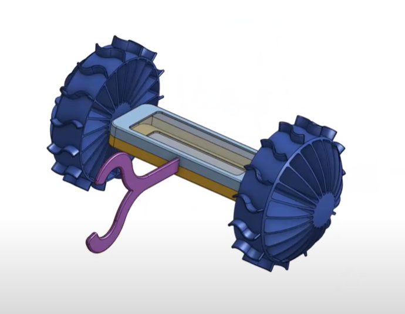

Check out @antlerboy's new post, "‘Digital’ vs ‘service design’ vs ‘BPR’ vs ‘TOMs’, versus designing services, in organisations, for…". https://antlerboy.medium.com/digital-vs-service-design-vs-bpr-vs-toms-versus-designing-services-in-organisations-for-a42ad19c5134?source=rss-97852f5a56ae------2
Check out @antlerboy's new post, "RIP Ryuichi Sakamoto". https://antlerboy.medium.com/rip-ryuichi-sakamoto-7f0554a259e7?source=rss-97852f5a56ae------2
Check out @sachinb91's new post, "An Aphex Twin Needle Drop". https://summerlightning.substack.com/p/an-aphex-twin-needle-drop
Check out @antlerboy's new post, "Things you know, that ain’t so, or ‘everything you thought you know is false porn’… the Cobra…". https://antlerboy.medium.com/things-you-know-that-aint-so-or-everything-you-thought-you-know-is-false-porn-the-cobra-64a169ea0335?source=rss-97852f5a56ae------2
Check out @sachinb91's new post, "Apathy is Balenciaga". https://summerlightning.substack.com/p/apathy-is-balenciaga
Check out @antlerboy's new post, "If you really want to get something done, turn to the #government.". https://antlerboy.medium.com/if-you-really-want-to-get-something-done-turn-to-the-government-a48e892e513e?source=rss-97852f5a56ae------2
Check out @vaughn_tan's new newsletter, "Quality time". https://uncertaintymindset.substack.com/p/quality-time
Open call for today‘s call with something for everybody:
“How to kick off a project w/ @HiredThought ”
“One of the clearest thinkers on strategy I’ve ever met” — @tasshinfogleman
https://hiredthought.com/2023/01/23/things-i-do-when-i-start-a-consulting-project/
On Yak Collective Discord. Join http://www.yakcollective.org
Replying to @HiredThought and @tasshinfogleman
Livestream here
https://www.youtube.com/watch?v=wlfPdExPB3w
Check out @anthilemoon's new post, "From Default Definitions to Deliberate Questions". https://nesslabs.com/default-definitions?utm_source=rss&utm_medium=rss&utm_campaign=default-definitions
Check out @antlerboy's new post, "Transduction — leading transformation — Issue #83". https://antlerboy.medium.com/transduction-leading-transformation-issue-83-c18e5b1b014d?source=rss-97852f5a56ae------2
Check out @sachinb91's new post, "The Lambs of Houston". https://summerlightning.substack.com/p/the-lambs-of-houston
Check out @vgr's new newsletter, "The Physics of Intelligence". https://studio.ribbonfarm.com/p/the-physics-of-intelligence
Check out @chrizbot's new post, "A smart home is one that talks to itself". https://uxdesign.cc/a-smart-home-is-one-that-talks-to-itself-58bb9222d893?source=rss-ba6349c9c628------2
Today we are reading "Noosphere, a protocol for thought" in our Distributed Systems Study Group
Livestream starts at
16:15 GMT
08:15 Pacific
11:15 Eastern
20:45 Indian
00:15 Tokyo
https://www.youtube.com/watch?v=CA5VIMCz730
Last week we had @HiredThought join us in our indie-accelerator study group and he went into details of his secret sauce which he uses when starting a consulting project
https://bit.ly/3BLYCsr
https://www.youtube.com/watch?v=wlfPdExPB3w
Check out @anthilemoon's new post, "The psychology of happiness". https://nesslabs.com/psychology-of-happiness?utm_source=rss&utm_medium=rss&utm_campaign=psychology-of-happiness
Check out @sachinb91's new post, "Context Window Problems". https://summerlightning.substack.com/p/context-window-problems
Check out @antlerboy's new post, "Transduction — leading transformation — Issue #84". https://antlerboy.medium.com/transduction-leading-transformation-issue-84-7ed824eaf1fc?source=rss-97852f5a56ae------2
Check out @chrizbot's new post, "Tug of war in online decision making". https://medium.com/agileinsider/tug-of-war-in-online-decision-making-148439884380?source=rss-ba6349c9c628------2
Check out @vgr's new newsletter, "The Firmament". https://studio.ribbonfarm.com/p/the-firmament
RT @anurajenp: made a new thumbnail for @yak_collective robotics garage (YARG…) 2023 weekly meetings
don’t forget to like and subscribe…
Our first quarter weekly meetings for YakRover project of YakCollective Robotics Garage is up on YouTube. Enjoy
https://www.youtube.com/playlist?list=PLrJaiS43Txmbu_j8cU1IOzqWJQWTvffcW
Today we have @gordonbrander as our guest in our Distributed Systems Study Group to tell us how we could all have our own personal AI
https://subconscious.substack.com/p/everyone-will-have-their-own-ai
Livestream starts at
16:15 UTC
08:15 Pacific
11:15 Eastern
20:45 Indian
00:15 Tokyo
https://www.youtube.com/watch?v=zFTfh3W0Kx0
Live in 15 minutes https://twitter.com/yak_collective/status/1647953434144849934
For 2023, the YakRover project plan is to try and design a modular rover with a globally distributed team and if possible test the rover in a remote place
Here is a quick mech design proto by @jaschawilcox

Replying to @jaschawilcox
We had two planning sessions for the design in the last two weeks with @anurajenp , @vgr , @not_replica , @maierfenster , @rhettford
Session 1 on YouTube
https://www.youtube.com/watch?v=XC57PG7xEOo
Replying to @jaschawilcox, @anurajenp, @vgr, @not_replica, @maierfenster and @rhettford
Session 2 on YouTube
https://www.youtube.com/watch?v=NFYIM4ZRcqU
Check out @p_millerd's new post, "A Pebble In My Shoe (Excerpt From The Pathless Path)". https://think-boundless.com/pebble/?utm_source=rss&utm_medium=rss&utm_campaign=pebble
Check out @tomcritchlow's new post, "The roadmap is not the territory". https://tomcritchlow.com/2023/04/18/roadmap-territory/
Check out @antlerboy's new post, "What kind of a leader are you?". https://antlerboy.medium.com/what-kind-of-a-leader-are-you-e3ad04df1b39?source=rss-97852f5a56ae------2
Check out @vaughn_tan's new newsletter, "The appreciation of rocks". https://uncertaintymindset.substack.com/p/the-appreciation-of-rocks
@vgr dropping in the indie accelerator channel to talk about https://artofgig.com/ now
https://discord.com/events/692111190851059762/1089959438665908284
Replying to @vgr
livestream here
https://www.youtube.com/watch?v=bKCXcRAycik
Check out @anthilemoon's new post, "Growth Loops: From linear growth to circular growth". https://nesslabs.com/growth-loops?utm_source=rss&utm_medium=rss&utm_campaign=growth-loops
Check out @sachinb91's new post, "Are You Content Yet? ". https://summerlightning.substack.com/p/are-you-content-yet
Check out @antlerboy's new post, "Transduction — leading transformation — Issue #85". https://antlerboy.medium.com/transduction-leading-transformation-issue-85-4558b349e3de?source=rss-97852f5a56ae------2
Check out @vgr's new newsletter, "History After History". https://studio.ribbonfarm.com/p/history-after-history
Today we are reading - "Web3 is Self-Certifying" by Jay Graber
https://www.youtube.com/watch?v=5PwHcTH-px4
Livestream starts at
16:15 UTC
08:15 Pacific
11:15 Eastern
20:45 Indian
00:15 Tokyo
Check out @sachinb91's new post, "Your Body is The Palace of Versailles ". https://summerlightning.substack.com/p/your-body-is-the-palace-of-versailles
Replying to @yak_collective
You can join the discord here. For 2023, we're currently deciding between trying to build a simple, low-cost desert rover together and/or a modular rover kit system. https://www.yakcollective.org/join.html
The Yak Rover project is looking for people with experience and/or interest in doing a custom PCB design for the 2023 design effort. Hop on the Discord to talk to the team. We meet on Zoom+Discord every Tuesday at noon Pacific. https://www.yakcollective.org/projects/yak-rover.html
Check out @antlerboy's new post, "In a world of Large Language Models and Machine Learning, is Operational Excellence as we know it…". https://antlerboy.medium.com/in-a-world-of-large-language-models-and-machine-learning-is-operational-excellence-as-we-know-it-e2625a12e5f4?source=rss-97852f5a56ae------2
Check out @evanwolf's new post, "2023 May 2 – Digital Identity from Vienna #36: Thinking Locally and Globally for Digital Wallets and Identification". https://wider.team/2023/04/26/vienna36/
Check out @tomcritchlow's new post, "What would a map of your career look like?". https://tomcritchlow.com/2023/04/26/career-maps/
Check out @anthilemoon's new post, "The neurochemicals of productivity and procrastination". https://nesslabs.com/neuroproductivity?utm_source=rss&utm_medium=rss&utm_campaign=neuroproductivity
Check out @antlerboy's new post, "Transduction — leading transformation — Issue #86". https://antlerboy.medium.com/transduction-leading-transformation-issue-86-17018db2dfe1?source=rss-97852f5a56ae------2
Check out @vgr's new newsletter, "The Puzzle of the Permaweird". https://studio.ribbonfarm.com/p/the-puzzle-of-the-permaweird
Check out @sachinb91's new post, "Some Kind of Mediocre Genius ". https://summerlightning.substack.com/p/some-kind-of-mediocre-genius